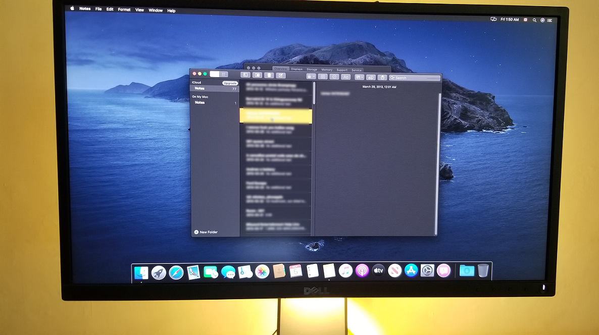

Refurbishing and assembling Dell OptiPlex 390 & customizing configuration.

MacOS Catalina running on Dell OptiPlex 390 through virtualization WMware for Microsoft Windows.
I am a computer enthusiast and have always loved fiddling with computers and technology in general. I started experimenting with computers when I was 11 years old with Windows XP and was mostly to run computer games. It is said “knowledge is power” and also that “knowledge is a curse”. Both applied on me as when I grew older and became more aware of how computers function, I started to dislike any general computer available on the market. During this time, I realized the importance of each different physical component in a computer especially a dedicated graphics processing unit (GPU).
Being located overseas during my early years of age, was not able to afford a high specifications computer so ended up making one by collecting used and relatively cheap desktop computer components. Based on where I lived, the only operating system that was generally known was Microsoft Windows which I found extremely irritating. So, I thought that there has to be some other operating system outside the scope of just these two and curiosity was answered well with time as I stumbled upon two Unix based operating systems:
Linux (various distros)
Apple MacOS
Installation Type
Method
Pros
Cons
Virtualization
VMware
Oracle VirtualBox
Easily accessed from Host OS in a hybrid environment.
Heavy resource consumption which possibly affects Host OS as well.
DHCP Options with Bootloader Modifications
x86 based CPU Kernel Patching of MacOS
Is run only in a dedicated environment.
Light resource consumption which runs the Host very well.
So just like the mentioned above, I try crazy things like this. Computer hardware and software modifications and optimizations. I’m not very good in formal programming when it comes to university courses. Perhaps I get nervous which takes a huge toll on my performance and I’ll be honest here, Calgary is not a place that is full of life rather it is the total opposite. It is cold and depressing which is why I take the best opportunity that I can to get out of Calgary to return to my home town Mississauga, Ontario which falls as part of Greater Toronto Area, Ontario, Canada.